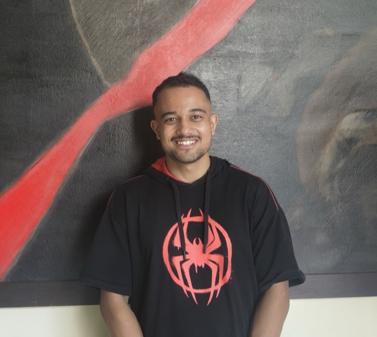

The Concurrence of Mega-Surveys
ICTS, BengaluruAug 2026
Flash talk (programme participant — see Schools & Workshops).
Type Ia supernovae, cosmography, and the large‑scale structure of the Universe.

Ph.D. Candidate in Physics
Department of Astronomy & Astrophysics, TIFR
I am a computational cosmologist at the Tata Institute of Fundamental Research, working on model-independent tests of the standard cosmological model using Type Ia supernovae and large-scale structure surveys.
My thesis work concerns the anisotropy of the local Universe: I have shown that the Pantheon+ supernova compilation carries a significant dipolar signal in both the expansion rate and the deceleration parameter, and that correcting these supernovae for progenitor-age evolution changes the inferred expansion history.
I am a member of the LSST Dark Energy Science Collaboration (DESC), and I also build mock catalogues for the Fundamental Plane sample of the DESI Legacy Imaging Surveys.
Model-independent tests of the standard cosmological model; the impact of cosmic anisotropies, inhomogeneities, and bulk flows on cosmological inference; peculiar velocities; and the application of machine-learning methods to large-scale structure analysis.
with Dr. Mohamed Rameez (TIFR), Prof. Subir Sarkar (University of Oxford), and Prof. Christos Tsagas (Aristotle University of Thessaloniki)
with Dr. Mohamed Rameez (TIFR)
with Dr. Shadab Alam (TIFR)
Tata Institute of Fundamental Research, Mumbai/Advisor: Dr. Mohamed Rameez
Tata Institute of Fundamental Research, Mumbai/Integrated Ph.D. programme
University of Delhi, India
A complete and up-to-date record is maintained on my INSPIRE-HEP and ORCID profiles.
Pantheon+ supernovae corrected for progenitor age indicate the universe is decelerating
A. Sah, M. Rameez & S. Sarkar · Monthly Notices of the Royal Astronomical Society 549, stag844 (2026)
Anisotropy in Pantheon+ supernovae
A. Sah, M. Rameez, S. Sarkar & C. G. Tsagas · European Physical Journal C 85, 596 (2025)
Examining the cosmic anisotropy with the Pantheon+ supernovae
A. Sah · Springer Proceedings in Physics 937, 284–287 (2025) · Proceedings of the XXVI DAE-BRNS High Energy Physics Symposium 2024
Flash talk (programme participant — see Schools & Workshops).
Contributed talk on Pantheon+ anisotropy and progenitor-age systematics.
Contributed talk on Pantheon+ anisotropy.
Talk on anisotropy in Pantheon+ supernovae. · Programme
Contributed talk on anisotropy in Pantheon+.
Contributed talk on cosmic anisotropy with Pantheon+.
Invited talk on Pantheon+ anisotropy.
Talk on cosmological analysis with the Pantheon+ compilation. · Recording

Project: reimplemented and trained a transformer-based decoder (GOTHAM) to accelerate halo catalogue generation from particle-mesh simulations via distributed multi-GPU training. Also presented a flash talk.
Chapters 3, 5, and 7. (Chapter 4 listed under Talks.)
Project: reanalysed Dark Energy Survey cosmic-shear measurements using machine-learning techniques.
Meeting supported by the Astronomical Society of India for early-career researchers in astronomy, astrophysics, and cosmology.
When I am not at the office, I am usually training calisthenics, out for a run, sketching, or on a trek somewhere. I am also an anime fan, and always happy to trade recommendations.